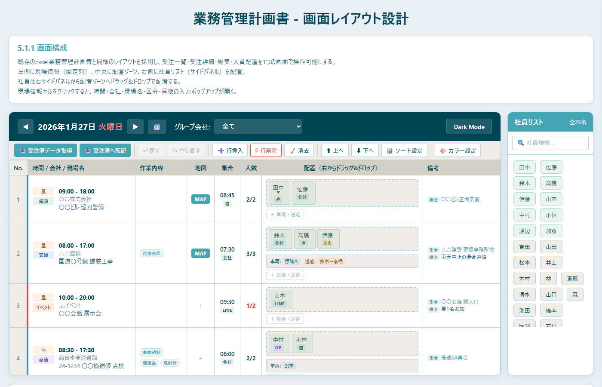
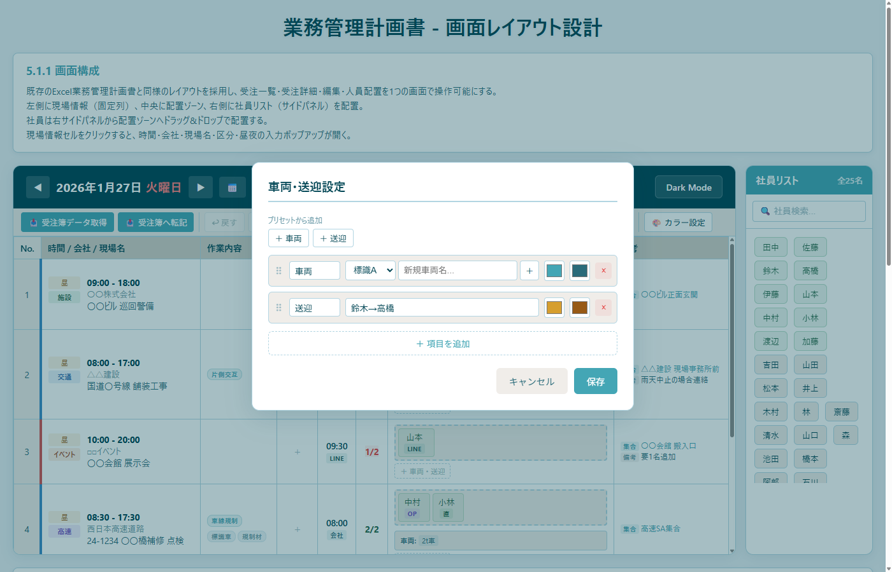
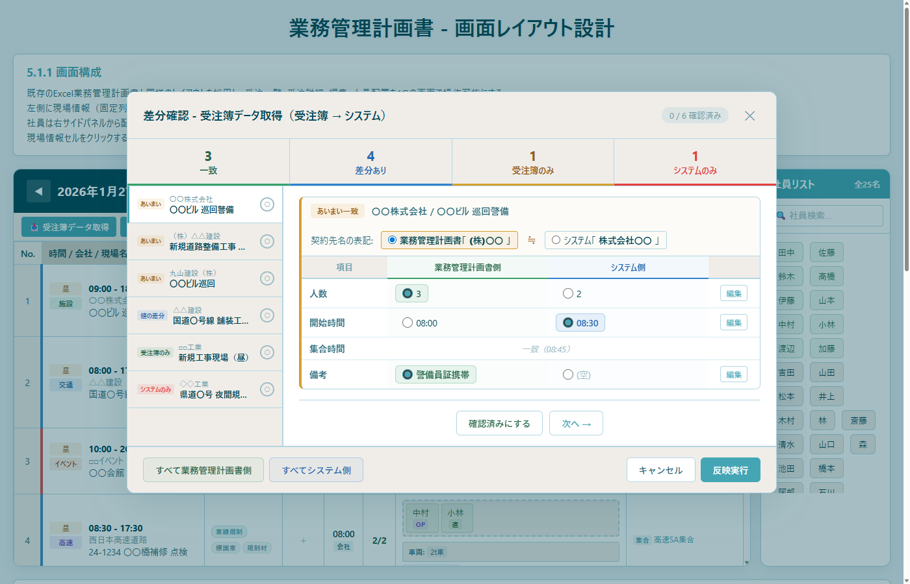
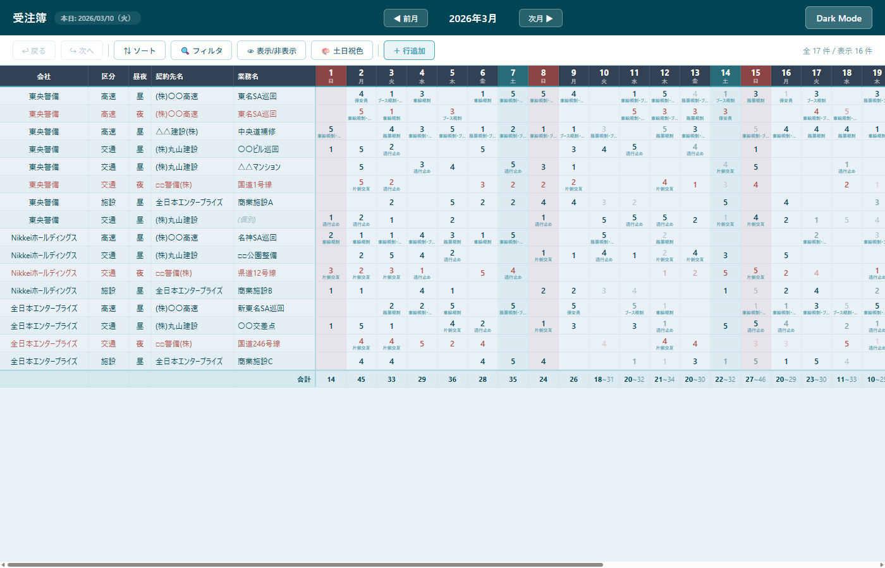

画面A
業務管理計画書 - メイン画面
メイン画面の全体構成
日次の配置管理を行うメイン画面。ヘッダー・ツールバー・グリッド・社員リストパネルで構成されます。

- ヘッダー部: 日付選択（前日/翌日ボタン・カレンダー）、グループ会社フィルタ、ダークモード切替
- ツールバー: 受注簿データ取得/転記、Undo/Redo、行操作（挿入/削除/消去）、行移動（上/下）、ソート設定、カラー設定
- グリッドテーブル: No.、時間/会社/現場名、作業内容、地図、集合、人数、配置ゾーン、備考の各列
- 右サイドパネル（社員リスト）: 全社員の名前タグを表示。検索機能付き。ドラッグ&ドロップで配置ゾーンに配置。配置済みは緑色で表示
- 配置ゾーン: 社員タグの下に車両・送迎情報ボックスを表示。連続勤務マーク(▼)や配置制約警告(⚠)も表示
画面A
現場詳細入力モーダル
現場情報の入力・編集
グリッドの「時間/会社/現場名」セルをクリックすると開きます。現場に関する全情報を入力できます。

- 契約先（元請け）: コンボボックス形式。入力で検索、リストから選択
- 業務管理計画書 業務名: 契約先と現場名から自動生成（読み取り専用）
- 現場名: コンボボックス形式で入力・選択
- 業務詳細: 工事名等をキー・バリュー形式で追加可能
- 区分・昼夜・会社: チップ（ボタン）形式で選択。区分は追加も可能
- 開始/終了時間: カスタム時間ピッカーで選択
- 現場監督・連絡先: テキスト入力。過去の入力履歴から選択も可能（ドラッグで並べ替え、×で削除）
画面A
集合情報モーダル
集合時間・連絡方法・集合場所の入力
グリッドの「集合」セルをクリックすると開きます。

- 集合時間: カスタム時間ピッカーで設定
- 連絡: チップ形式で連絡方法を選択（会社/直/LINE/迎え/OP）。カスタム追加も可能
- 集合場所: テキスト入力
画面A
作業内容モーダル
区分に応じた作業内容の設定
グリッドの「作業内容」セルをクリックすると開きます。

- 区分表示: 現在の区分（交通・高速など）を表示
- 作業内容: チップ形式で作業内容を管理。ドラッグで並べ替え、×で削除可能
- 詳細（孫バッジ）: 作業内容の中にさらに詳細項目を追加可能（例: 片側交互 > 旗、看板）
- 作業内容追加: 「+ 作業内容追加」ボタンで新しい作業を追加
画面A
備考モーダル
集合場所・備考の入力
グリッドの「備考」セルをクリックすると開きます。

- 集合場所: テキスト入力で集合場所を設定
- 備考: テキストエリアで自由入力
画面A
地図URL設定モーダル
Google Maps URLの設定とプレビュー
グリッドの「地図」セルをクリックすると開きます。

- Google Maps URL: URLを貼り付けて地図を設定
- 表示ボタン: 入力したURLのプレビューを表示
- プレビュー: iframe内にGoogle Mapsを埋め込みプレビュー表示
- 削除: 設定済みの地図URLを削除
画面A
車両・送迎設定モーダル
車両と送迎情報の管理
配置ゾーン下の車両・送迎ボックスまたは「＋ 車両・送迎」ボタンをクリックすると開きます。

- プリセットから追加: 「＋ 車両」「＋ 送迎」ボタンで定型項目をワンクリック追加
- 車両項目: 項目名の編集、ドロップダウンから車両選択（標識A/B、2t車等）、新規車両の追加
- 送迎項目: 項目名の編集、送迎内容（例: 鈴木→高橋）をテキスト入力
- カラー設定: 各項目の背景色・文字色をカラーピッカーで設定可能
- 並べ替え: ⠿アイコンのドラッグで項目の順序変更可能
- ＋ 項目を追加: カスタム項目の自由追加
画面A
ソート設定モーダル
グリッド行の並び順設定
ツールバーの「ソート設定」ボタンをクリックすると開きます。

- 4段階ソート: 区分 → 昼夜 → 契約先 → 現場名 の階層的なソートを設定
- ドラッグ&ドロップ: 各項目内の順序をドラッグで変更（例: 施設を1番、交通を2番にする）
- 連動絞り込み: 契約先は区分選択で絞り込み、現場名は契約先選択で絞り込み
- 昇順/降順: ▲▼ボタンで並び順を切替
- リセット: 設定をデフォルトに戻すリセットボタン
画面A
差分確認モーダル
受注簿との差分確認・反映
ツールバーの「受注簿データ取得」または「受注簿へ転記」ボタンをクリックすると開きます。

- ステータスタブ: 一致・差分あり・受注簿のみ・システムのみ の4カテゴリで分類
- 左側リスト: 全件を一覧表示。クリックで詳細を右側に展開
- 差分詳細: 項目ごとに業務管理計画書側/システム側の値を比較。ラジオボタンでどちらを採用するか選択
- あいまい一致: 契約先名の表記ゆれ（例: (株)〇〇 vs 株式会社〇〇）を検知し、どちらの表記を採用するか選択
- 確認済み管理: 各件を確認済みにマーク。全件確認後に反映実行
- 一括操作: 「すべて業務管理計画書側」「すべてシステム側」で一括選択
画面A
カラー設定パネル
画面のカラーテーマをカスタマイズ
ツールバーの「カラー設定」ボタンをクリックすると、右側にスライドインで表示されます。

- カラーパターン: プリセットの保存・読み込み・削除が可能
- グループ会社（左ボーダー）: 東央警備、Nikkeiホールディングス等のボーダー色を設定
- 区分カラー: 施設・イベント・交通・高速の背景色・文字色をそれぞれ設定
- シフト区分: 昼勤務・夜勤務の背景色・文字色を設定
- デフォルトに戻す: 全色設定をデフォルト値にリセット
画面B
受注簿 - メイン画面
月間の受注データグリッド
月単位で全受注データを一覧管理するメイン画面。

- ヘッダー部: 本日の日付表示、月選択（前月/次月ボタン）、ダークモード切替
- ツールバー: Undo/Redo、ソート、フィルタ、表示/非表示、土日祝色、行追加ボタン。件数表示
- グリッド: 左側に固定列（会社・区分・昼夜・契約先名・業務名）、中央に日付列（1日〜月末）、右端に合計列
- セルの色分け: 人数に応じた色分け表示。作業内容がある場合はセル内にツールチップ表示
- 本日列のハイライト: 当日の列が強調表示される
- 合計行: 最下部に全行の日ごとの合計を表示
画面B
フィルタバー
表示データの絞り込み
ツールバーの「フィルタ」ボタンをクリックするとトグル表示されます。

- 会社: ドロップダウンでグループ会社を選択（すべて/東央警備/Nikkeiホールディングス）
- 区分: ドロップダウンで区分を選択（施設/イベント/高速/交通/応援交通）
- 昼/夜: ドロップダウンでシフトを選択
- 契約先: テキスト入力で契約先名による絞り込み
- クリア: 全フィルタを一括解除
画面B
セル編集モーダル
日ごとの受注データの詳細入力
グリッドの日付セルをクリックすると開きます。その日の受注データを詳細に編集できます。

- ヘッダー情報: 契約先/業務名、会社/区分/シフト情報を表示
- 人数・信頼度: 人数入力と信頼度チップ（確定/予定（高）/予定（低））の選択
- 業務詳細: 工事名等の項目名・内容をペアで入力。動的に追加可能
- 業務管理計画書 業務名: 業務名と業務詳細から自動生成（例: 東名SA巡回 > 舗装工事 > 本体施工）
- 区分・作業内容: 業務管理計画書と同じバッジ管理。親バッジ・子バッジ・孫バッジの3階層
- 開始/終了時間: カスタム時間ピッカーで設定
- 現場監督・連絡先: テキスト入力。過去の入力履歴からの選択も可能
- 集合場所・集合時間: テキスト入力とカスタム時間ピッカー
- 現場地図: Google Maps URLの入力・プレビュー
- 備考: テキストエリアで自由入力
画面B
行情報編集モーダル
行の基本情報を編集
グリッドの固定列（会社名・区分・昼夜・契約先名・業務名）をクリックすると開きます。

- 会社: チップ形式でグループ会社を選択
- 区分: チップ形式で区分を選択。「+ 追加」でカスタム区分の追加も可能
- 昼夜: チップ形式で昼/夜を選択
- 契約先名: テキスト入力
- 業務名: テキスト入力。空欄の場合は「個別業務」として各セルごとに異なる業務名を持てる
画面B
ソート設定モーダル
行の並び順設定
ツールバーの「ソート」ボタンをクリックすると開きます。

- ソートキー: 会社・区分カテゴリ・契約先名・業務名・昼/夜の5つのソートキー
- 優先順位: ドラッグ&ドロップでソートキーの優先順位を変更
- 昇順/降順: 各キーの▲ボタンで並び順を切替